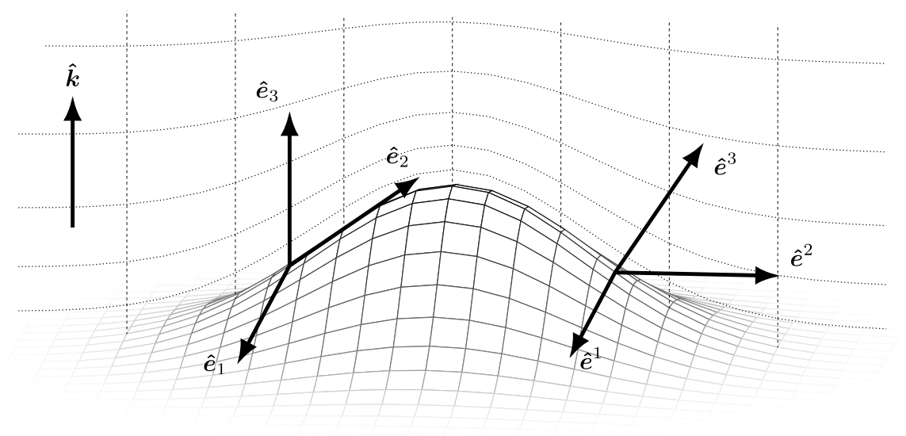

Mathematical framework
ClimaCore represents scalar and vector fields on a discretized domain and evaluates differential operators on them. Two ideas run through the whole library. First, every grid is the image of a reference element under a coordinate map, so vectors carry a basis with them and operators are written in the coordinates of the reference element. Second, the horizontal discretization is a Galerkin method on a nodal polynomial space, so the operators come in a strong and a weak form and conservation follows from the pairing of the two. This page introduces both ideas and fixes the notation that the other explanation pages use.
Vectors and bases
A physical vector has a direction and a magnitude; its components are numbers that depend on the basis they are taken in. On a curved or stretched grid the natural bases vary from point to point, so a component has meaning only together with the basis at that point. ClimaCore therefore stores vectors as typed components (Geometry.Covariant12Vector, Geometry.UVWVector, …) and converts between bases with the local geometry of the node.
The local orthonormal basis
The simplest basis is the local orthonormal frame, written UVW:
- in a Cartesian domain, it is the fixed Cartesian basis,
Ualongx,Valongy,Walongz; - on the sphere, it is the frame of spherical coordinates,
Ueastward (zonal),Vnorthward (meridional),Wradially outward.
Its components have physical units and a direct interpretation, and U, V are horizontal and W vertical in every domain, so model code written in terms of them runs on a box and on the sphere alike. The types are Geometry.UVector, UVVector, WVector, UVWVector, and the two-component mixtures UWVector, VWVector. Physical quantities are set and read in this basis, and it is the basis in which direct stiffness summation averages vectors across element boundaries.
Covariant and contravariant bases
The differential operators do not work in the orthonormal frame. Each element is the image of a reference element under a map x = r(ξ) with reference coordinates ξ = (ξ¹, ξ², ξ³), and two bases are attached to every point of the image:
\[\mathbf e_i = \frac{\partial \mathbf r}{\partial \xi^i} \quad \text{(covariant, tangent to the coordinate lines)}, \qquad \mathbf e^i = \nabla \xi^i \quad \text{(contravariant, normal to the coordinate surfaces)}.\]
They are dual, e_i ⋅ eʲ = δᵢʲ, and coincide only where the map is orthogonal and unit-scaled. A vector u has covariant components u_i = u ⋅ e_i and contravariant components uⁱ = u ⋅ eⁱ, so that u = uⁱ e_i = u_i eⁱ, and the two sets are related by the metric tensor,
\[g_{ij} = \mathbf e_i \cdot \mathbf e_j, \qquad g^{ij} = \mathbf e^i \cdot \mathbf e^j, \qquad u^i = g^{ij} u_j, \qquad u_i = g_{ij} u^j .\]
The Jacobian determinant J = √det g converts reference volumes to physical volumes.

A stretched terrain-following grid over a mountain. Dotted lines are the coordinate surfaces ξ³ = const (levels) and ξ¹ = const (columns); k̂ is the vertical unit vector. The covariant basis vectors ê₁, ê₃ are tangent to the coordinate lines, so over the slope ê₃ follows the tilted column; the contravariant basis vectors ê¹, ê², ê³ are normal to the coordinate surfaces, so ê³ is normal to the level. On flat ground the two bases coincide; over the slope they differ, and the metric terms g³¹, g³² relate them. From [2].
The operators fix which components they take and return. A gradient of a scalar is naturally covariant, (∇ψ)_i = ∂ψ/∂ξⁱ; a divergence needs contravariant components, ∇ ⋅ u = J⁻¹ ∂(J uⁱ)/∂ξⁱ, because J uⁱ is the flux through a coordinate surface; a curl maps covariant to contravariant components. Operators.Gradient therefore returns a covariant vector and Operators.Divergence converts its argument to contravariant components before differencing. Because the bases are specific to an element and to a node, comparing or averaging covariant components of neighboring elements goes through the orthonormal frame first. Conversions are constructors that take the node's Geometry.LocalGeometry, which the grid stores at every node; Hybrid grids and generalized coordinates gives the metric terms of the cubed sphere and of terrain-following coordinates and the operator forms in full.
The Galerkin discretization
Strong and weak forms
A differential equation can be imposed pointwise (its strong form) or after multiplication by a test function v and integration over the domain (its weak form). For the Poisson problem −∇²u = f on Ω, multiplying by v and integrating by parts gives
\[\int_\Omega \nabla v \cdot \nabla u \, dV - \int_{\partial \Omega} v\, \nabla u \cdot \widehat{\mathbf n}\, dS = \int_\Omega v f \, dV ,\]
which asks one derivative less of u and moves a derivative onto v. A Galerkin method seeks u in a finite-dimensional space V_h and requires the weak form to hold for every v ∈ V_h. The boundary integral is where boundary conditions enter, and it vanishes when the normal flux is prescribed to be zero or when the domain is periodic.
The spectral-element space
A spectral-element space is a Galerkin space built from a partition of the domain into elements Ω_e [20, 21]. Within each element a function is a polynomial of degree Nq − 1 in each reference direction, represented by its values at Nq nodes per direction: the basis is nodal, a tensor product of Lagrange interpolating polynomials L_n(ξ) that equal one at node ζ_n and zero at the other nodes. Restricting the polynomials to single elements, rather than interpolating globally, keeps the coupling between degrees of freedom local, so that no dense global system arises when element contributions are summed.
The nodes are chosen to be the points of a quadrature rule, so that the same nodes that carry the function also integrate it (collocation):
\[\int_{\Omega_e} \psi\, dV \approx \sum_{n} w_n\, J_n\, \psi_n .\]
With this rule the mass matrix ∫ L_m L_n J dξ is diagonal, the weak form of a derivative becomes an explicit nodal formula, and the product WJ = w J at a node is its discrete volume and the weight of every integral and inner product in the library. ClimaCore's default rule is Gauss–Lobatto–Legendre (Quadratures.GLL{Nq}), whose nodes include the element endpoints; nodes on element boundaries are then shared between neighbors, which is what a continuous (CG) function space needs. Gauss–Legendre nodes (Quadratures.GL{Nq}) lie strictly inside the element, and a grid on them is discontinuous.
How the element-local weak form is assembled into a global operator, by direct stiffness summation on a continuous space or by interface numerical fluxes on a discontinuous one, and which form of each operator a conservation law requires, is the subject of Spectral elements: CG and DG. The vertical direction is discretized differently, by finite differences on a staggered grid; Staggered vertical discretization gives those operators.
Notation
The explanation pages use the following symbols.
| Symbol | Meaning |
|---|---|
ξ = (ξ¹, ξ², ξ³) | Reference coordinates; ξ¹, ξ² in [−1, 1] within a horizontal element, ξ³ along the column |
x = r(ξ) | Coordinate map from the reference element to the physical domain |
e_i, eⁱ | Covariant and contravariant basis vectors |
u_i, uⁱ | Covariant and contravariant components of u |
g_ij, gⁱʲ | Metric tensor and its inverse |
J | Jacobian determinant of the coordinate map |
Nq, ζ_n, w_n | Nodes per direction of an element, node positions, quadrature weights |
WJ | Quadrature weight times Jacobian at a node: its discrete volume |
L_n(ξ), D_mn | Lagrange basis polynomials and the differentiation matrix D_mn = L_n′(ζ_m) |
∇ₕ, ∇ₕ ⋅, ∇ₕ × | Horizontal spectral-element gradient, divergence, curl |
∂̃, Divergence{WeakForm} | A weak-form operator: the negative adjoint of the strong form under the WJ inner product |
𝒫 | Direct stiffness summation (DSS), the projection onto the continuous space |
F*(y⁻, y⁺; n̂) | A numerical flux at a DG face, from the states on the two sides and the outward normal |
i, i + ½ | Cell-center and cell-face positions of the vertical grid (PlusHalf indices in code) |
C2F, F2C | Finite-difference operators from centers to faces and from faces to centers |